DFM Pattern Capture
Layer operation
License: Calibre Pattern Matching
Captures patterns based on specified lithographic hotspots or based on a specified mask layer.
Calibre must run in hierarchical mode (-hier) in order to use DFM Pattern Capture.
Usage
DFM PATTERN CAPTURE
{{LAYER_HOTSPOT hotspot_layer
PATTERN_HALO {halo | x_halo y_halo} [FROM_EXTENTS | FROM_EDGES]
[MAX_SEARCH value [SEARCH_LEVEL EXACT] ]
[MAX_LENGTH value]}
| {LAYER_PATTERN_MASK pattern_mask_layer}}
{LAYER_TARGET target_layer [LAYER_NUMBER layer_number] [DC]
[layer_halo] [FROM_EXTENTS | FROM_EDGES]
[DENSITY_PROP [PROP_NAME dens_prop_name]]
[VERTEX_PROP [PROP_NAME prop_name] [KEEP_ORIGINAL_VERTEX] ]
}…
[LAYER_EMPTY empty_name [DC]] …
[LAYER_REGION region_source_layer region_type region_target_layer] …
[OUTFILE filename [OVERWRITE | APPEND]
[PATTERN_ATTR attr_name attr_value [INTEGER | FLOAT | STRING]]… ]
[OUTPUT_LAYER {DEFAULT | BBOX | BBOX10}]
[EXCEPTIONS_ONLY]
[LAYER_PATTERN_MARKER marker_spec marker_name] …
[PATTERN_MARKER_METHOD marker_method]
[MERGE_MARKERS]
[EXTENT_TRACING]
[PATTERN_NAME_PREFIX name [NUM_START value] ]
[PATTERN_NAME_PROP name_str_prop]
[PATTERN_CGLOBAL cglobal]
[LAYER_CGLOBAL layer_cglobal cglobal_target_layer]…
[MATCH_ORIENT | MATCH_ROTATION]
[MATCH_TYPE]
[PATTERN_ORIENT pattern_orient_option]
[MATCH_ORIENTATIONS match_orientations_option]
[CAPTURE_ORIENT orient_prop_name]
[PATTERN_PROP name num_value [FLOAT | INTEGER]] …
[OUTPUT_PROP]
[INDEX_PROP index_prop_name]
[SET_PROP prop_name [MIN | MAX] ]
[DUP_COUNT dup_prop_name]
[PATTERN_KEY name] …
[COMMENT "comment_string"]
Arguments
- LAYER_HOTSPOT hotspot_layer
A keyword set that specifies to capture patterns centered at the shapes on the hotspot_layer, which must be an original or derived polygon layer. This keyword set is required if LAYER_PATTERN_MASK is not specified. The default pattern capture area is defined by the PATTERN_HALO keyword.
It is possible to specify both LAYER_HOTSPOT and LAYER_PATTERN_MASK. In this case the pattern capture area is determined by the shapes on the pattern_mask_layer, while the shapes on the hotspot_layer that are within the pattern extent are instantiated as marker shape(s) for the captured pattern.
- PATTERN_HALO {halo | x_halo y_halo} [FROM_EXTENTS | FROM_EDGES]
A required keyword set when LAYER_HOTSPOT is specified. The PATTERN_HALO keyword set defines the halo region, which is centered on the hotspot_layer shapes by default. The captured patterns are composed of shapes on the target_layer(s) within the halo region. See Figure 1. The halo size is specified in user units.
halo — The width of the halo region is 2 * halo. By default the halo is measured from the center of the hotspot_layer shape.
x_halo y_halo — The halo region is 2 * x_halo in the x-direction, and 2 * y_halo in the y-direction.
FROM_EXTENTS — An optional keyword that specifies to measure the halo from the bounding box of the hotspot_layer shape.
FROM_EDGES — An optional keyword that specifies to measure the halo from the edges of the hotspot_layer shape. Non-Manhattan hotspot shapes are ignored and a warning is issued. The keyword cannot be used with MAX_SEARCH or with independent x_halo and y_halo values.
Figure 1. PATTERN_HALO in DFM Pattern Capture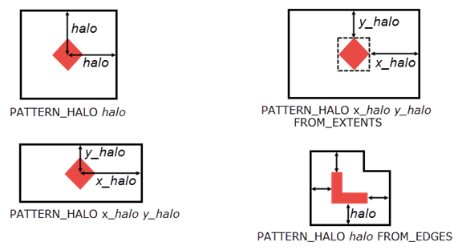The keywords MAX_SEARCH and MAX_LENGTH also affect the determination of the halo region. See “Pattern Location and Capture Area”.
- MAX_SEARCH {0 | value} [SEARCH_LEVEL EXACT]
An optional keyword set that specifies to perform auto-centering of the pattern location if value is greater than zero. The default is to not perform auto-centering. MAX_SEARCH is only valid when capturing patterns with the LAYER_HOTSPOT method.
Auto-centering primarily uses shapes on the first listed target_layer that do not have the DC keyword.
value — Defines a square search region centered on the hotpot shape and with a width of 2*value. An internal algorithm uses target layer edges and vertices within the search region to optimize the location of the pattern center. If any target layer edges or vertices exist within the hotspot_layer shape, they contribute to auto-centering regardless of the MAX_SEARCH value. If no target layer edges are found within the search region, the pattern center is not adjusted. The use of MAX_SEARCH may increase the number of duplicate patterns that are found.
When specified, the MAX_SEARCH value is recommended to be at least half the halo size set with PATTERN_HALO.
SEARCH_LEVEL EXACT — Specifies to use an improved search algorithm that attempts to optimize the number of duplicate patterns that are identified, thus reducing the total number of patterns that are captured. Compared to the case when SEARCH_LEVEL EXACT is not specified, the search finds more duplicate patterns and increases runtime.
SEARCH_LEVEL EXACT also enables auto-centering when only edges (no vertices) are present within the search range. BCM patterns are not auto-centered unless SEARCH_LEVEL EXACT is specified.
When SEARCH_LEVEL EXACT is specified an error is issued if the MAX_SEARCH value is greater than the halo size.
MAX_LENGTH is not allowed with SEARCH_LEVEL EXACT. The MAX_LENGTH keyword is ignored if used and a warning is issued.
Auto-centering is useful when the process that produces the hotspot layer results in hotspot locations that vary from run to run. See “MAX_SEARCH and SEARCH_LEVEL EXACT Keywords for Pattern Auto-Centering” for further discussion and illustrations.
- MAX_LENGTH value
An optional keyword set, where value is specified in user units. When specified, hotspot shapes are divided into a number of smaller segments when encountering long hotspot shapes. The default value is 0, indicating no segmentation. If a hotspot shape exceeds MAX_LENGTH in length, width, or both, the shape is divided into equal hotspot segments, each being less than or equal to the MAX_LENGTH. Each hotspot segment is then handled independently, according to MAX_SEARCH, PATTERN_HALO, and other keywords.
MAX_LENGTH is not allowed with SEARCH_LEVEL EXACT. The MAX_LENGTH keyword is ignored when used with SEARCH_LEVEL EXACT and a warning is issued. MAX_LENGTH is not allowed with LAYER_PATTERN_MASK.
In the following figure, MAX_LENGTH divides a hotspot into seven equal segments. This example uses MAX_SEARCH, so segment 2 and segment 7 do not cover the entire section of the drawn layer due to nearby geometries.
Figure 2. Large Hotspot Segmented Using MAX_LENGTH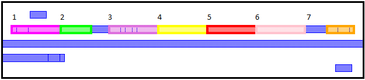The resulting four patterns created using MAX_LENGTH are shown in the following figure. The patterns show that the marker for the pattern is the portion of the hotspot shape captured per segment. The pattern corresponding to segments 3, 4, 5, and 6 show that the hotspot does not reach out to the extent because the length of the segments is less than MAX_LENGTH.
Figure 3. Patterns Output by MAX_LENGTH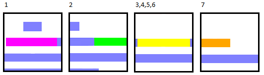- LAYER_PATTERN_MASK pattern_mask_layer
A keyword set that specifies to capture patterns at the locations of shapes on pattern_mask_layer, which must be an original or derived polygon layer. The shapes on the layer must be Manhattan shapes in order to generate a pattern. The default capture area is defined by the shapes on pattern_mask_layer—the pattern consists of target_layer(s) shapes within the extent of the pattern_mask_layer shapes. This keyword must be specified if LAYER_HOTSPOT is not used.
PATTERN_HALO, MAX_SEARCH, and MAX_LENGTH generate an error if LAYER_PATTERN_MASK is specified.
- LAYER_TARGET target_layer [LAYER_NUMBER layer_number] [DC] [layer_halo] [FROM_EXTENTS | FROM_EDGES] [DENSITY_PROP [PROP_NAME dens_prop_name]] [VERTEX_PROP [PROP_NAME prop_name] [KEEP_ORIGINAL_VERTEX] ]
A required keyword set that specifies a target layer name. The secondary keywords are order dependent and should be specified in the order shown. The polygons that exist on the target_layer within the bounds of the capture area are copied to the pattern layer, where the capture area is determined by the LAYER_HOTSPOT, PATTERN_HALO, FROM_EXTENTS, FROM_EDGES, and LAYER_PATTERN_MASK keywords. This keyword set may be specified more than once. When specifying this keyword set more than once, the order of the target layers is preserved. When doing a pattern matching run, the matching layer order passed to the CMACRO call must correspond to the captured order, otherwise no matches are detected. The order of the target layer names must stay consistent from run to run.
LAYER_NUMBER layer_number — An optional keyword set that specifies the layer number that is assigned to the pattern layer in the saved pattern library.
If not specified, original layers are assigned the layer number determined from the LAYER and LAYER MAP statements in the rule file.
layer_halo — An optional value that defines a per-layer halo region. The layer_halo value is specified in user units and defines a square halo region centered on the hotspot_layer shapes and with a width of 2 * layer_halo. If layer_halo is specified, target_layer shapes must be within the per-layer halo region to be included in the pattern—the layer_halo overrides the PATTERN_HALO value for the specified target_layer. The LAYER_HOTSPOT keyword must be specified if a per-layer layer_halo is used. If every target layer has a specified layer_halo value, then the PATTERN_HALO keyword set is optional. The pattern extent is determined by the largest halo value specified. See the figures within Table 2.
If FROM_EXTENTS or FROM_EDGES is specified with PATTERN_HALO, the keyword is used when determining the per-layer halo region. If FROM_EXTENTS or FROM_EDGES is specified for a specific target_layer, the specified behavior is used for that target_layer.
If OUTFILE is specified, the per-layer halo is saved as a per-layer custom extent in the saved pattern library.
FROM_EXTENTS | FROM_EDGES — An optional keyword choice that specifies how to measure the per-layer halo region for the target_layer. The keywords can be specified with or without a layer_halo value for the target_layer. The keyword definitions are provided with the PATTERN_HALO keyword description. The per-layer halo is measured from the center of the hotspot_layer shape by default.
The LAYER_HOTSPOT keyword must be specified if these keywords are used. If FROM_EDGES is specified, non-Manhattan hotspot shapes are ignored and a warning is issued. FROM_EDGES cannot be used with MAX_SEARCH.
layer_halo is specified — The specified FROM_EXTENTS or FROM_EDGES behavior is used to determine the target_layer halo region.
layer_halo is not specified — The PATTERN_HALO value and the specified FROM_EXTENTS or FROM_EDGES behavior is used to determine the target_layer halo region. A single halo value must be specified; separate x- and y-halo values are not supported.
DENSITY_PROP [PROP_NAME dens_prop_name] — An optional keyword set that specifies to calculate the density for the specified target_layer. The density is calculated per pattern and per target layer, and is the ratio of the target_layer area to the pattern extent. If a don't care region is specified for the target layer with “LAYER_REGION region_source_layer dontcare target_layer”, the area within the don't care region is excluded from the calculation of the target_layer area, as illustrated in Figure 4.
The density property is named DENSITY_target_layer by default. The density property is attached to the output layer shape. If OUTFILE is specified, the density property is added to the saved pattern.
PROP_NAME dens_prop_name — Optional keyword set that specifies to use dens_prop_name as the name of the density property rather than the default.
The following figure shows the density calculation for two patterns captured in the same operation. The density is only calculated for the metal1 target layer. The pattern on the left has a metal1 density of 0.75. The pattern on the right has the same coverage of metal1, but layer2 is specified as a dontcare region for metal1, so the metal1 area under layer2 is not considered in the density calculation, resulting in a metal1 density of 0.5.
Figure 4. DFM Pattern Capture DENSITY_PROP with Don’t Care Region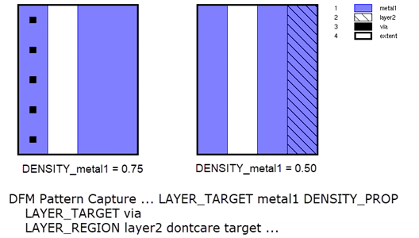VERTEX_PROP [PROP_NAME prop_name] [KEEP_ORIGINAL_VERTEX] — An optional keyword set that specifies to calculate the real vertex count for the specified target_layer.
The vertex count property is named VERTEX_target_layer by default. The property is attached to the output layer shape. If OUTFILE is specified the property is also saved to the pattern library.
Real vertices are those that do not touch the pattern or layer extent. A count of ‑1 is returned if the pattern extent is empty. A count of 0 is returned if there are no real vertices, such as for a BCM pattern. Specifying the DC keyword for the target_layer does not affect the vertex count. If LAYER_REGION DONTCARE is specified for the target_layer, vertices within the don’t care region are not included in the vertex count.
PROP_NAME prop_name — Optional keyword set that specifies to use prop_name as the name of the property rather than the default.
KEEP_ORIGINAL_VERTEX — If MAX_SEARCH is specified, by default the vertex count is calculated at the location of the adjusted pattern center. If KEEP_ORIGINAL_VERTEX is specified the vertex count is calculated with the pattern center at the original location, which is the center of the hotspot_layer shape. This option can only be specified if the MAX_SEARCH keyword is specified.
- DC
An optional keyword that specifies the corresponding layer is a Don’t Care pattern layer. The DC keyword may be specified for LAYER_TARGET and LAYER_EMPTY layers. Geometries on Don’t Care pattern layers are ignored during the matching process. See “Don’t Care Pattern Layers” in the Calibre Pattern Matching User’s Manual.
- LAYER_EMPTY empty_name [DC]
An optional keyword set that specifies an empty layer name to include in the captured patterns. The name empty_name must not be a layer in the input layout. The empty layer empty_name is added to each pattern and has no geometries in the pattern. This keyword set may be specified more than once.
The optional DC keyword can be specified to indicate that the layer is a Don’t Care pattern layer.
- LAYER_REGION region_source_layer region_type region_target_layer
An optional keyword set that adds region layers to captured patterns.
region_source_layer — Name of the source layer for the region shapes. The region_source_layer must be an original or derived polygon layer and cannot be a target_layer. The shapes on region_source_layer must be Manhattan polygons.
region_type may be one of the following:
dontcare — A region that is ignored during the pattern matching process.
critical — A region that requires a minimum of one polygon to exist within the region for a successful match during the a pattern matching run.
keepout — A region that can have no geometries within it. Keep out regions can be used to put holes in pattern geometries.
region_target_layer — Name of the pattern layer the region is applied to. The region_target_layer must be a target_layer.
There is no limit to the number of LAYER_REGION entries. LAYER_REGIONs must not overlap or abut all pattern edges, so that at least one real edge remains in the pattern; otherwise the capture location results in an exception and no pattern is captured.
For more details about regions, see “Region Layers” in the Calibre Pattern Matching User’s Manual.
- OUTFILE filename [OVERWRITE | APPEND] [PATTERN_ATTR attr_name attr_value [INTEGER | FLOAT | STRING]]…
An optional argument set that specifies to create a pattern library (PMDB) with the name filename. The “.pmdb” file extension is added automatically if it is not used in the filename. The OUTFILE keyword cannot be used with EXCEPTIONS_ONLY.
OVERWRITE | APPEND
An optional keyword that specifies behavior when filename already exists:
OVERWRITE — The library is deleted if it already exists, and a new library is created. This is the default behavior.
APPEND — The captured patterns are appended to the library if it already exists, otherwise a new library is created.
PATTERN_ATTR attr_name attr_value [INTEGER | FLOAT | STRING]
An optional argument set that adds a user-defined pattern attribute to each pattern in the saved pattern library. You can specify multiple argument sets. OUTFILE must be specified when using PATTERN_ATTR.
attr_name — A string giving the name of the attribute.
attr_value — The value of the attribute. If the value is a string that includes spaces, the string must be enclosed in quotes.
INTEGER | FLOAT | STRING — An optional keyword giving the attribute type. If the type is not specified, by default a numeric value has type FLOAT and a value that includes non-numeric characters has type STRING.
Note:If the same PMDB filename is specified in another DFM Pattern Capture command in the rule file and APPEND is not used, the APPEND option is enforced and a warning message is issued.
If the PMDB file exists and APPEND is not used, the PMDB file is overwritten and a warning is issued.
If APPEND is specified, the tool checks that the target_layer count and layer names match the existing library layer count and layer names. If they do not match, an error message is issued. The APPEND option merges newly captured patterns with the patterns existing in the library. However, any duplicates that existed in the library before using APPEND are not removed.
For example, say that a library, patterns.pmdb, contains 3 patterns: pat1(unique), pat2 (unique), and pat3 (duplicate of pat1). Also, assume that DFM Pattern Capture has been called with APPEND and the following patterns are captured: pat4 (unique), pat5 (duplicate of pat2), and pat6 (duplicate of pat4). After capture completes, the library contains the following patterns: pat1(unique), pat2 (unique), pat3(duplicate of pat1), pat4(unique). As libraries generated by DFM Pattern Capture are automatically merged, the duplication in this example occurs only if the original library is manually created.
If the MATCH_ORIENT/MATCH_ROTATION or MATCH_TYPE keywords are specified when using APPEND, they are set in the final library.
- OUTPUT_LAYER {DEFAULT | BBOX | BBOX10}
An optional keyword set that specifies the shape of the polygon on the output layer. The DEFAULT behavior is used if OUTPUT_LAYER is not specified.
DEFAULT — The shape on the output layer depends on the presence of the LAYER_HOTSPOT and LAYER_PATTERN_MASK keywords:
LAYER_HOTSPOT only — Output layer shape is the hotspot_layer shape.
LAYER_PATTERN_MASK only — Output layer shape is the pattern_mask_layer shape.
LAYER_HOTSPOT and LAYER_PATTERN_MASK — If a hotspot_layer shape exists within the pattern bounding box, it is used as the output layer shape, otherwise the pattern_mask_layer shape is used.
BBOX — The shape on the output layer is the pattern bounding box.
BBOX10 — The shape on the output layer is the pattern bounding box with its width and length sized down to approximately ten percent of the original values. The minimum width and length is 1 dbu.
Note:The BBOX and BBOX10 output layer shapes are determined from the rectangular pattern bounding box.
When FROM_EDGES is specified with PATTERN_HALO, the bounding box may not be the same as the halo region.
- EXCEPTIONS_ONLY
- Note:
The EXCEPTIONS_ONLY keyword is deprecated as of the 2018.2 release. It will be removed in a future release.
An optional keyword that specifies the only output of the command is all hotspot_layer or pattern_mask_layer shapes that could not be used to create a pattern. This keyword cannot be used with OUTFILE.
Using EXCEPTIONS_ONLY to create a derived layer containing pattern locations that did not result in a captured pattern requires a separate DFM Pattern Capture operation, which increases runtime. It is more efficient to use the NOT operation to derive such locations. For example:
captured_hs = DFM PATTERN CAPTURE LAYER_TARGET metal1 LAYER_HOTSPOT hotspots PATTERN_HALO 0.1 not_captured = hotspots NOT captured_hs - LAYER_PATTERN_MARKER marker_spec marker_name
An optional keyword set that specifies a marker type and marker name. This keyword set may be specified multiple times to add multiple markers to the pattern. It is recommended that the keyword be specified fewer than 255 times due to limitations in the compile library utility.
marker_spec — Defines the type of marker. Choose one of the following:
marker_layer — Shapes on marker_layer within the pattern extent define a custom-type marker. The marker_layer cannot be a target_layer. If there are no shapes on the marker_layer within the pattern extent, a marker of type “Empty” is created.
BBOX — The marker is the pattern bounding box.
BBOX10 — The marker is the pattern bounding box with its width and length sized down to approximately ten percent of the original values. The minimum width and length is 1 dbu.
HOTSPOT — The marker is created using shapes on the hotspot_layer. An error is returned if the LAYER_HOTSPOT keyword is not specified.
If hotspot_layer and pattern_mask_layer are both specified, or a large MAX_SEARCH value is specified, it is possible for the hotspot_layer shape to be partially or completely outside the pattern bounding box. If the hotspot_layer shape is completely outside the pattern bounding box, the BBOX10 method is used to create the marker; otherwise the marker is the Boolean AND of the hotspot_layer shape and the pattern bounding box.
MASK — The marker is the pattern_mask_layer shape. An error is returned if the LAYER_PATTERN_MASK keyword is not specified.
DRAWN_LAYER layername — The marker is the pattern geometries on layername that are within the pattern bounding box. The layername must be a target_layer without the DC keyword. If there are no layername geometries within the pattern bounding box, a marker of type “Empty” is created.
MATCHED_LAYER layername — The marker is the matched geometries on layername that are within the pattern bounding box. The layername must be a target_layer without the DC keyword. If there are no layername geometries within the pattern bounding box, a marker of type “Empty” is created.
marker_name — The marker name, which cannot include white space. If the marker name is “Marker”, PATTERN_MARKER_METHOD is ignored if specified and the shape on the output layer is determined as with “PATTERN_MARKER_METHOD DEFAULT”.
For general information on markers, see “Marker Layer” in the Calibre Pattern Matching User’s Manual.
- PATTERN_MARKER_METHOD marker_method
- Note:
The PATTERN_MARKER_METHOD keyword is deprecated as of the 2018.2 release. It will be removed in a future release.
Use a combination of LAYER_PATTERN_MARKER and OUTPUT_LAYER to specify the pattern markers and the output layer shape.
An optional keyword set that defines how the output marker for the pattern is created. The DEFAULT method is used if PATTERN_MARKER_METHOD is not specified. This option also affects the shape on the output layer as noted with each option.
The output pattern marker has the name “Marker”. If LAYER_PATTERN_MARKER is specified with a marker_name of “Marker”, the PATTERN_MARKER_METHOD specification is ignored.
The pattern marker must fit within the pattern bounding box. The pattern bounding box is the minimum rectangular extent that fits the pattern extent after extent tracing (if EXTENT_TRACING is specified).
The marker_method can be one of the following:
DEFAULT
The marker depends on the presence of the LAYER_HOTSPOT and LAYER_PATTERN_MASK keywords:
LAYER_HOTSPOT only — Marker is created from the hotspot_layer shape.
LAYER_PATTERN_MASK only — Marker is created from the pattern_mask_layer shape.
LAYER_HOTSPOT and LAYER_PATTERN_MASK — If a hotspot_layer shape exists within the pattern bounding box, it is used as the marker shape, otherwise the pattern_mask_layer shape is used.
The shape on the output layer is the same as the marker shape (the hotspot_layer or pattern_mask_layer shape).
BBOX
The output pattern marker is the same as the pattern bounding box. The shape on the output layer is determined as with the DEFAULT option (the hotspot_layer or pattern_mask_layer shape).
BBOX10
The output pattern marker is the pattern bounding box with its width and length sized down to approximately ten percent of the original values. The minimum width and length is 1 dbu. The shape on the output layer is the same as the marker shape (the BBOX10 shape).
DRAWN_LAYER layername
The output pattern marker is the pattern geometries on layername that are within the pattern bounding box. The layername must be a specified target_layer. If there are no layername geometries within the pattern bounding box, a marker of type “Empty” is created.
The shape on the output layer is determined as with the DEFAULT option.
HOTSPOT
The output pattern marker is created using shapes on the hotspot_layer. An error is returned if the LAYER_HOTSPOT keyword is not specified.
If hotspot_layer and pattern_mask_layer are both specified, or a large MAX_SEARCH value is specified, it is possible for the hotspot_layer shape to be partially or completely outside the pattern bounding box. If the hotspot_layer shape is completely outside the pattern bounding box, the BBOX10 method is used to create the output marker; otherwise the output marker is the Boolean AND of the hotspot_layer shape and the pattern bounding box.
Note: For the case in which no hotspot_layer shape is within the pattern bounding box, the HOTSPOT method creates a BBOX10 marker, whereas the DEFAULT method creates the marker from the pattern extent.
The shape on the output layer is the same as the marker shape.
MASK
The output pattern marker is the pattern_mask_layer shape. An error is returned if the LAYER_PATTERN_MASK keyword is not specified. The shape on the output layer is the same as the marker shape (the pattern_mask_layer shape).
MATCHED_LAYER layername
The output pattern marker is the matched geometries on layername that are within the pattern bounding box. The layername must be a specified target_layer. If there are no layername geometries within the pattern bounding box, a marker of type “Empty” is created.
The shape on the output layer is determined as with the DEFAULT option.
- MERGE_MARKERS
An optional keyword that specifies to merge the custom marker geometries of patterns that differ only in their custom markers. By default, patterns that differ only in their markers are considered duplicates, and the saved pattern library includes only the first such captured pattern and its marker layers. MERGE_MARKERS applies to custom marker shapes.
To qualify for marker merging, the patterns must have identical markers for the non-custom markers and the custom markers must have identical names. The custom marker geometries are merged with an OR function. Only custom type markers are merged.
This option is similar to the merge_markers option for the merge pdl_lib_mgr utility. Also see “Marker Layer” in the Calibre Pattern Matching User’s Manual.
Note:If one pattern has an empty marker and a duplicate pattern has a custom marker with the same name, MERGE_MARKERS outputs the pattern with the custom marker.
- EXTENT_TRACING
An optional keyword that specifies that the pattern extent is created from the extent of each polygon in the pattern. When this keyword is not specified, a default extent is created for the pattern. This option should not be used when more than one target_layer is specified.
The pattern extent is created by sizing up all non-virtual edges by 1 dbu. If the PATTERN_CGLOBAL option is specified, non-virtual edges are sized up by a value of (2*cglobal + 1 dbu). This results in a pattern extent which may be multiple shapes. Extents are Manhattan polygons, containing only 90 degree angles.
The following figure shows a captured pattern with extent tracing enabled.
Figure 5. Pattern Extent Tracing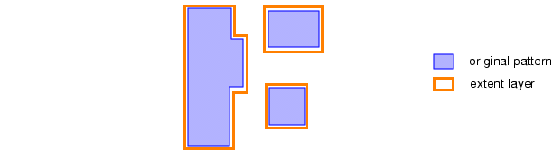If a captured pattern has non-Manhattan shapes, the EXTENT_TRACING keyword is ignored for that pattern and a default extent is created.
- PATTERN_NAME_PREFIX name [NUM_START index]
An optional argument set that uses the specified name string to form the pattern names. The name string may contain alphanumeric characters and underscores; white space is not allowed. By default, all patterns are named “_P_n”, where n is an ordinal starting with zero. When PATTERN_NAME_PREFIX is used, the pattern name is “namen”, the name string followed by an ordinal starting with one for the first pattern output; the starting number can be set with NUM_START.
NUM_START index — Starts the ordinal portion of the pattern name at index. This option is useful to ensure that pattern names are unique if a library might be merged in a later step.
For example:
PATTERN_NAME_PREFIX patcap_ NUM_START 32The first pattern output is named “patcap_32”. If a second pattern is created during the capture process, it has the name “patcap_33”. If OUTPUT_PROP or INDEX_PROP are specified, the property values start at an index of 32.
Without NUM_START in the preceding example, the first pattern is named “patcap_1”. If OUTPUT_PROP or INDEX_PROP are specified, the property values start at 1.
By default (without PATTERN_NAME_PREFIX), the first pattern is named “_P_0” and the OUTPUT_PROP and INDEX_PROP values start at 1.
- PATTERN_NAME_PROP name_str_prop
An optional argument set that enables naming patterns based on the value of the DFM Property name_str_prop read from the hotspot_layer or pattern_mask_layer. The property name_str_prop must be a string or vector of strings property (see “DFM Properties”). If the property is a vector of strings, the first vector component is used to form the pattern name. The name of each captured pattern is the value of name_str_prop for the corresponding hotspot_layer or pattern_mask_layer shape. This keyword set has precedence over PATTERN_NAME_PREFIX.
If two or more hotspot_layer or pattern_mask_layer shapes have the same value for name_str_prop, “_ordinal” is appended to the name of the second and subsequent patterns, where ordinal starts with 1. For example, if three hotspot shapes have a name_str_prop value of “HS_A”, the corresponding patterns are named HS_A, HS_A_1, and HS_A_2.
See “Example 2” for an example of reading text from a layout with DFM Text and processing it with DFM Property and the VSTRING function in order to create the pattern name string.
If there is no name_str_prop property, a warning is issued and patterns are named in the default manner or according to PATTERN_NAME_PREFIX, if specified. If there is more than one property name_str_prop on a hotspot_layer or pattern_mask_layer shape, one of property values is used and a warning is issued.
- PATTERN_CGLOBAL {0 | cglobal}
An optional argument set that adds a global edge constraint (cglobal) to every pattern. The default value is zero. The cglobal value is a non-negative floating point number in user units.
The value specified for PATTERN_CGLOBAL should be less than or equal to one quarter of the minimum allowed width or spacing for all target_layers, whichever is smaller. Figure 6 shows an example of a captured pattern with a cglobal value of 0.001 microns. See “Global Constraints” in the Calibre Pattern Matching User’s Manual.
If the pattern at a particular layout location cannot have constraints, the pattern is considered invalid and not captured. For example, multilayer BCM patterns, crossbar patterns, and patterns with angled edges cannot have cglobal constraints. See “Topological Edge Match (TEM) Patterns” in the Calibre Pattern Matching User’s Manual for a description of crossbar patterns.
Figure 6. cglobal of 0.001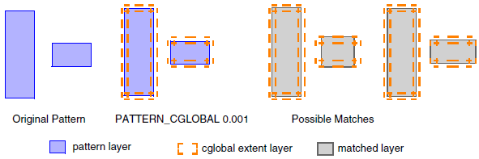- LAYER_CGLOBAL layer_cglobal cglobal_target_layer
An optional argument set that adds a layer-specific global edge constraint (cglobal). This keyword set may be specified multiple times.
layer_cglobal — The per-layer global edge constraint, which is a a non-negative floating point number in user units. It should be less than or equal to 1/4 of the minimum width or spacing of the polygons on cglobal_target_layer, whichever is smaller.
cglobal_target_layer — The layer that the layer_cglobal constraint is applied to. The layer must be a target_layer.
If PATTERN_CGLOBAL is specified, the per-layer layer_cglobal value overrides the pattern cglobal value on the cglobal_target_layer.
If the pattern at a particular layout location cannot have constraints, the pattern is considered invalid and not captured.
- MATCH_ORIENT
An optional keyword that sets the library attribute “Set match_orient Property” in the pattern library that is saved when OUTFILE is specified. This keyword cannot be specified with MATCH_ROTATION.
When the pattern library is used in a pattern matching run, the match_orient property is included on the output marker for a matched result. See “Reserved Property Names” in the Calibre Pattern Matching User’s Manual.
The following figure shows the possible orientations of a pattern and the corresponding value of match_orient for a matched result.
Figure 7. Possible match_orient Property Values in a Matched Result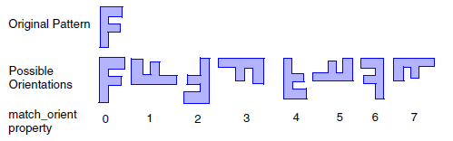Note:MATCH_ORIENT does not affect how patterns are matched. See PATTERN_ORIENT and MATCH_ORIENTATIONS if you want to control the allowed orientations for a match.
The use of MATCH_ORIENT can cause slower performance and increased flattening of the results when the pattern library is used in a pattern matching run.
- MATCH_ROTATION
An optional keyword that sets the library attribute “Set match_rotation Property” in the pattern library that is saved when OUTFILE is specified. This keyword cannot be specified with MATCH_ORIENT.
When the pattern library is used in a pattern matching run, the match_rotation property is included on the output marker for a matched result. See “Reserved Property Names” in the Calibre Pattern Matching User’s Manual
The match_rotation property can have the value 0 or 1, depending on the matched orientation as shown in the following figure. The numbers below each orientation correspond to the match_orient property value, as shown in Figure 7.
Figure 8. Possible match_rotation Values in a Matched Result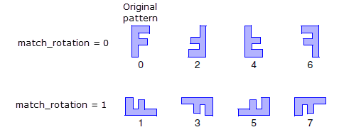Note:MATCH_ROTATION does not affect how patterns are matched. See PATTERN_ORIENT and MATCH_ORIENTATIONS if you want to control the allowed orientations for a match.
The use of MATCH_ROTATION can cause slower performance and increased flattening of the results when the pattern library is used in a pattern matching run.
- MATCH_TYPE
An optional keyword that sets the library attribute “Set match_type Property” in the pattern library that is saved when OUTFILE is specified.
When the library is used in a pattern matching run, the match_type property is included on the output marker for a matched result, indicating whether the match involves a constraint. See “Reserved Property Names” in the Calibre Pattern Matching User’s Manual.
- PATTERN_ORIENT pattern_orient_option
An optional argument set that selects the allowed orientations for a successful match to the pattern. The pattern_orient_option argument may be specified as 0, 1, or 2; an error is generated if any other value is specified.
0 — Allows matches in any orientation. Patterns that differ only in orientation are considered duplicates and only one pattern is saved. When viewed in the Calibre Pattern Matching GUI, all orientations are selected. This is the default if PATTERN_ORIENT is not specified.
1 — Allows matches in only the original orientation or orientations that result from a combination of reflections about the x or y axis.
Referring to Figure 7, otherwise identical patterns with orientations 0, 2, 4, or 6 are considered duplicates and only one pattern is saved.
If otherwise identical patterns are found in orientations that result from reflections about the x or y axis (orientations 0, 2, 4, or 6) and in orientations that include a rotation of 90 or 270 (orientations 1, 3, 5, or 7), this is equivalent to allowing all orientations. In this case only one pattern is saved and all orientations are selected. See “Example 4”.
2 — Allows matches in only the orientation of the captured pattern. Only one pattern is saved for patterns that differ only in orientation. When viewed in the GUI, the appropriate orientations are selected.
The MATCH_ORIENTATIONS keyword also specifies pattern orientation and has more options than PATTERN_ORIENT. You can also specify orientation in the Calibre Pattern Matching GUI; see “Defining Orientation for a Pattern” in the Calibre Pattern Matching User’s Manual.
In order to see the matched orientation for a result after a pattern matching run, set the MATCH_ORIENT keyword.
Note:Calibre releases prior to 2015.3 allowed specification of pattern_orient_option in a binary code. Binary code is no longer supported and is interpreted as a decimal value. For example, the binary value 00000001 previously set the same behavior as the current value 2. If the binary value 00000001 is entered now, the zeros are truncated and the value is interpreted as 1.
- MATCH_ORIENTATIONS match_orientations_option
An optional argument set that selects the allowed orientations for a successful match to the pattern and controls which orientations of an otherwise identical pattern are classified as duplicate patterns. The match_orientations_option argument can have these values:
YES — All rotations and reflections of a pattern are classified as duplicate patterns. Matches are allowed in any orientation. This is the default.
NO — Patterns with the same orientation are considered duplicates; rotations and reflections of a pattern are considered unique patterns. Matches are allowed only in the original orientation.
Unlike “PATTERN_ORIENT 2”, patterns that differ only in orientation are saved as unique patterns that must match in the original orientation.
X_AXIS — Reflections of a pattern across the horizontal axis are considered duplicates. Matches are allowed for reflections across the horizontal axis.
Y_AXIS — Reflections of a pattern across the vertical axis are considered duplicates. Matches are allowed for reflections across the vertical axis.
ROTATION — Rotations of a pattern are considered duplicates. Referring to Figure 7, otherwise identical patterns with orientations 0, 1, 2, or 3 are considered duplicates. Matches are allowed for any rotation of a pattern.
REFLECTION — Any combination of horizontal and vertical reflections of a pattern are considered duplicates. Referring to Figure 7, otherwise identical patterns with orientations 0, 2, 4, or 6 are considered duplicates. The corresponding matches are allowed.
Unlike “PATTERN_ORIENT 1”, otherwise identical patterns that include a rotation are saved as a separate pattern.
When a pattern is viewed in the Calibre Pattern Matching GUI, the appropriate match orientations are selected. You can also specify orientation in the Calibre Pattern Matching GUI; see “Defining Orientation for a Pattern” in the Calibre Pattern Matching User’s Manual.
If both MATCH_ORIENTATIONS and PATTERN_ORIENT are specified, duplicate patterns are determined as specified by MATCH_ORIENTATIONS, and this determines the patterns that are saved to the library. However, the pattern saved in the pattern library has the allowed orientations to match as specified by PATTERN_ORIENT. You should use care when specifying both MATCH_ORIENTATIONS and PATTERN_ORIENT as some combinations may result in undesirable behavior. For example, “PATTERN_ORIENT 0” with any MATCH_ORIENTATIONS setting results in patterns with all orientations selected. See “Example 5”.
- CAPTURE_ORIENT orient_prop_name
An optional argument set that adds the property orient_prop_name to each output layer shape. The property value indicates the orientation in which the pattern was captured, where the possible values are 0-7, as shown in Figure 7. The first captured instance of a pattern has an orient_prop_name value of 0. Duplicate pattern instances have a property value that indicates the orientation with respect to the first pattern instance.
- PATTERN_PROP name num_value [FLOAT | INTEGER]
An optional argument set that adds a property and numeric value to all patterns generated by the operation. This keyword set may be specified multiple times to add multiple properties.
The property type is FLOAT by default; INTEGER can be specified. If INTEGER is specified and a floating point value is given, the num_value is truncated.
- OUTPUT_PROP
An optional keyword that adds an integer property named “intern_number” to each shape on the output layer. The integer is the index of the captured pattern. Numbering starts at 1 by default, or at the index specified with the NUM_START keyword.
This property can aid in debugging when used with INDEX_PROP.
- INDEX_PROP index_prop_name
An optional argument set that adds an integer property with the name index_prop_name to each captured pattern that is saved when OUTFILE is specified. The property contains the pattern index. Numbering starts at 1 by default, or at the index specified with the NUM_START keyword.
This property can aid in debugging when used with OUTPUT_PROP.
- SET_PROP prop_name [MIN | MAX]
An optional argument set that specifies selection criteria for the numeric property prop_name when saving the property value to the pattern library when OUTFILE is specified.
By default the minimum property value is saved to the pattern if duplicate patterns have differing values for a property. Specify MAX with this keyword set in order save the maximum value for the property prop_name when duplicate patterns are found.
This keyword set may be specified only once. A warning is issued if prop_name is not a numeric property and the keyword set is ignored.
- DUP_COUNT dup_prop_name
An optional argument set that adds the property dup_prop_name to each output layer shape and to each saved pattern. The property contains the total number of occurrences per pattern, where the minimum value is 1, corresponding to the original pattern instance.
- PATTERN_KEY name
An optional argument set that adds a key name to all saved patterns. This keyword set may be specified multiple times to add additional keys. See “Pattern Keys” in the Calibre Pattern Matching User’s Manual.
- COMMENT “comment_string”
An optional argument set that attaches a pattern comment (the comment_string) to each pattern in the pattern library that is saved when OUTFILE is specified.
Description
The operation identifies and captures patterns based on specified lithographic hotspots or based on a specified pattern mask layer containing shapes corresponding to the pattern extent. The output layer contains hotspot or pattern mask shapes corresponding to valid pattern locations. A pattern library is saved if the OUTFILE keyword is specified. Only exact-match patterns are captured.
The following table describes the basic modes of operation with default settings—subsequent sections describe how additional keywords affect the operation.
|
Capture based on hotspot locations |
Capture based on pattern mask shapes |
|---|---|---|
Keywords used |
LAYER_HOTSPOT PATTERN_HALO |
LAYER_PATTERN_MASK |
Pattern locations |
Centered on the shapes on the hotspot_layer. |
Determined by the shapes on the pattern_mask_layer. |
Default capture area |
A halo region centered on the shapes on the hotspot_layer. |
The extent of shapes on the pattern_mask_layer. |
Output layer (default) |
Shapes on the hotspot_layer that correspond to a captured pattern. |
Shapes on the pattern_mask_layer that correspond to a captured pattern. |
The captured pattern includes shapes on the target_layer(s) that are within the capture area, where the default capture area is described in the preceding table. Some keywords change the capture area. There must be at least one real vertex or edge from a target_layer within the pattern capture area in order to generate a pattern.
The following figure shows the basic operation, and also includes a per-layer halo for the LAYER_HOTSPOT case (see “Pattern Location and Capture Area”). The per-layer halo results in no metal2 shapes being captured for the layout region shown.
LAYER_HOTSPOT and PATTERN_HALO with per-layer halo  Result: The metal1 shapes within the pattern halo extent are captured. There are no metal2 shapes within the metal2 per-layer halo extent, so the captured pattern does not include metal2 shapes. |
LAYER_PATTERN_MASK  Result: The metal1 and metal2 shapes within the mask1 extent are captured. |
The following sections describe how optional keywords affect the basic operation:
Pattern Location and Capture Area
The operation identifies patterns composed of the shapes on the target_layer(s). The pattern locations and pattern capture area are determined by the following keyword combinations, where the effect of optional keywords is described.
LAYER_HOTSPOT hotspot_layer PATTERN_HALO {halo | x_halo y_halo} [FROM_EXTENTS | FROM_EDGES]
Pattern Locations — The locations are determined by the shapes on hotspot_layer. These optional keyword sets can be used:
MAX_LENGTH value — Any hotspot shape edges longer than value are split into segments that are at most value long. The segmenting of a hotspot shape increases the number of pattern locations.
MAX_SEARCH value — Specifies a search distance used for auto-centering the pattern. This can change the pattern center.
Pattern Capture Area — The capture area is centered on the hotspot shape. It is a square region with width 2*halo, or a rectangular region with dimensions 2*x_halo and 2*y_halo. See Figure 1. The pattern center may be adjusted by auto-centering if MAX_SEARCH is specified. If the hotspot shape edges are segmented, each resulting polygon is treated as a separate hotspot shape.
FROM_EXTENTS — Specifies to measure the halo region from the bounding box of the hotspot shape.
FROM_EDGES — Specifies to measure the halo region from the edges of the hotspot shape. The hotspot shape must be a Manhattan shape in order to generate a pattern.
layer_halo — A per-layer halo region can be defined for a target_layer—this adjusts the capture area for the specified target_layer. See the syntax and definition for the LAYER_TARGET keyword and the figures within Table 2.
LAYER_PATTERN_MASK pattern_mask_layer
Pattern location — Pattern locations are determined by the shapes on pattern_mask_layer.
Pattern Capture Area — The capture area is the extent of the shapes on pattern_mask_layer.
If both LAYER_PATTERN_MASK and LAYER_HOTSPOT are specified, the pattern location and capture area are determined as for LAYER_PATTERN_MASK and the hotspot_layer shapes are used for the output layer shape and the pattern marker. See “Output Layer” and “Marker Creation”.
MAX_SEARCH and SEARCH_LEVEL EXACT Keywords for Pattern Auto-Centering
The following figures illustrate the concepts involved in the auto-centering process. The behavior is described with three cases: A) No edges or vertices in the search range, B) At least one vertex is within the search range, and C) Only edges are within the search range.
In the figures for Case A and Case B, the design has three hotspot locations. The hotspots are in slightly different locations relative to three target layer shapes that are identical for all three hotspot locations.
When SEARCH_LEVEL EXACT is specified, the pattern center is relocated to provide the greatest number of duplicate patterns. Without SEARCH_LEVEL EXACT, the number of duplicate patterns is not considered.
Case A: No vertices or edges are within the search range. No auto-centering takes place. Three unique patterns are captured.
Case B: A target layer vertex is within the search region. The number of captured patterns depends on whether SEARCH_LEVEL EXACT is specified, as shown in Figure 10 and Figure 11. For the right-most hotspot, a portion of the target layer shape in the lower right corner is within the pattern capture area with only MAX_SEARCH specified, but is not included for the example with SEARCH_LEVEL EXACT. More duplicate patterns are identified using SEARCH_LEVEL EXACT.
Case C: Only edges are within the search region, no vertices. SEARCH_LEVEL EXACT is necessary in order to get auto-centering. MAX_SEARCH alone does not auto-center for BCM patterns or TEM patterns without a vertex in the search range.
Trial pattern centers are projected vertically and horizontally from the center of the hotspot to target layer edges within the search range. The trial pattern center that results in the most duplicate patterns is chosen. If the trial patterns centers result in no duplicate patterns, the original hotspot location is used as the pattern center.
Figure 12 shows the behavior when a BCM pattern is captured. Because no vertices are within the search region, the trial pattern centers are projected onto the target layer edges. The three hotspot locations result in one pattern, with two duplicates.
The following figure shows a TEM pattern with no vertices within the search range of 0.4 user units. As a result, the trial pattern centers are projected onto the target layer edges. The distance from the hotspot to the vertical edge is different for the center hotspot location. The captured pattern at the center location is unique, while the right- and left-side captured patterns are duplicates.
When SEARCH_LEVEL EXACT is specified, if the initial search using the first listed target layer does not find vertices or edges within the search range, additional target layers are also considered for certain cases, especially when the pattern on the first target layer is type BCM. If there are still no pattern geometries within the search range, the search range is increased by the halo size.
Output Layer
By default, the shapes saved to the output layer of DFM Pattern Capture depend on the LAYER_HOTSPOT and LAYER_PATTERN_MASK keywords as follows:
Keywords |
Shapes on output layer (default behavior) |
|---|---|
LAYER_HOTSPOT |
Shapes on hotspot_layer. |
LAYER_PATTERN_MASK |
Shapes on pattern_mask_layer. |
LAYER_PATTERN_MASK and LAYER_HOTSPOT |
Shapes on hotspot_layer that exist within the pattern capture area, otherwise shapes on pattern_mask_layer. |
The OUTPUT_LAYER keyword changes the shape on the output layer. See the argument description for details.
The PATTERN_MARKER_METHOD keyword also affects the shape on the output layer. The PATTERN_MARKER_METHOD keyword set is deprecated as of the 2018.2 release. Use the LAYER_PATTERN_MARKER and OUTPUT_LAYER keywords to specify the pattern markers and output layer shape.
By default, only shapes that correspond to a valid pattern location are output. If EXCEPTIONS_ONLY is specified, the only output of the command is all shapes on the hotspot_layer or pattern_mask_layer that could not be used to create a pattern.
The output layer of the DFM Pattern Capture operation can be output or post-processed like any derived polygon layer. This can be useful in validation and debugging procedures.
Property Handling
Certain properties are read from the input layer and written to the output layer and/or the pattern saved when OUTFILE is specified. Properties can also be added by specifying certain keywords.
Properties on Input Layers
DFM Pattern Capture automatically reads string and numeric properties on the hotspot_layer or pattern_mask_layer. Both string and numeric properties are written to the output layer; only numeric properties are written to the saved pattern when OUTFILE is specified. If both hotspot_layer and pattern_mask_layer are specified, the properties on pattern_mask_layer are processed. See “Example 3” for an example that reads numeric values from text layers in the layout. DFM Text and DFM Property Merge are used to save the numeric values as properties, which are then read automatically and saved to the pattern and the output layer.
The PATTERN_NAME_PROP keyword set specifies to read a string or vector of strings property from the hotspot_layer or pattern_mask_layer. The string or first vector component is used to name the corresponding pattern. This is useful when text properties exist in the layout. See “Example 2”, which reads properties from the layout with DFM Text and processes the properties with DFM Property Merge and VSTRING. The string or vector of string property is copied to the shape on the output layer but is not added to the saved pattern.
Added Properties
The keywords in the following table add properties to shapes on the output layer and/or the pattern library if OUTFILE is specified. A brief description is given; see the keyword description for complete details.
Keyword |
Property Description |
Output Layer |
Pattern Library |
|---|---|---|---|
DENSITY_PROP |
Density of target_layer, excluding any don’t care regions. The default property name is DENSITY_target_layer. A user-defined property name can be specified with PROP_NAME. |
Yes |
Yes |
VERTEX_PROP |
The real vertex count for the target_layer, excluding vertices in don’t care regions. The default property name is VERTEX_target_layer. A user-defined property name can be specified with PROP_NAME. KEEP_ORIGINAL_VERTEX affects the vertex count when MAX_SEARCH is also specified. |
Yes |
Yes |
PATTERN_PROP |
Numeric property, with a specified property name and value. |
No |
Yes |
INDEX_PROP |
Pattern ordinal, with a specified property name. The ordinal starts at 1 by default and can be adjusted by NUM_START. |
No |
Yes |
OUTPUT_PROP |
Pattern ordinal, with property name “intern_prop”. The ordinal starts at 1 by default and can be adjusted by NUM_START. |
Yes |
No |
DUP_COUNT |
The number of duplicates for the pattern, with the specified property name. |
Yes |
Yes |
CAPTURE_ORIENT |
The orientation of the captured pattern, with the specified property name. See the argument definition and Figure 7. |
Yes |
No |
You should make sure that the names of properties added by the operation do not conflict with each other or with existing properties. Property data can be lost if property names conflict. Properties added by the operation are listed in the preceding table. Properties on the hotspot_layer or pattern_mask_layer are also attached to the output layer.
If a property on the hotspot_layer or pattern_mask_layer shape has the same name as one of the output properties listed in Table 3, the property value on the hotspot_layer or pattern_mask_layer shape is not used. Only the output property value is used. No warning is issued in the transcript.
Output Pattern Library
The operation creates a pattern matching database (PMDB) file if the OUTFILE keyword is included. Duplicate patterns, including patterns that differ only in orientation or markers, are not saved by default. The keyword DUP_COUNT adds a property to each pattern, where the property contains the total number of occurrences per pattern.
Patterns that differ only in their markers are considered duplicates and the duplicates are not saved. By default, the pattern library includes only the first such captured pattern and its corresponding marker layers. If the MERGE_MARKERS keyword is specified, the geometries for the custom markers from all duplicate patterns are merged and one pattern is saved with the merged markers; see MERGE_MARKERS for details on which patterns qualify to have markers merged. Also see the merge_markers option for the merge pdl_lib_mgr utility.
Property values are ignored when determining if patterns are duplicates. By default the minimum property value is saved to the pattern if duplicate patterns have differing values for a property. You can specify “SET_PROP prop_name MAX” to save the maximum value of the property prop_name instead. This keyword set may only be specified once.
You can specify the allowed orientations for successful match to a pattern with the PATTERN_ORIENT or MATCH_ORIENTATIONS keyword. These keywords affect how duplicate patterns that differ only in orientation are saved in the pattern library. MATCH_ORIENTATIONS also affects what is considered a duplicate pattern, and therefore the number of patterns saved to the library. See the keyword definitions for details and “Example 4” and “Example 5”.
The default pattern name is “_P_n”, where n is an ordinal starting with zero. The default naming can be changed with the keywords PATTERN_NAME_PREFIX or PATTERN_NAME_PROP.
You can add a cglobal constraint to the pattern library with the PATTERN_CGLOBAL keyword.
Pattern libraries can assign a layer number to each pattern layer. By default, pattern layers captured from original layers are assigned the layer number determined from LAYER and LAYER MAP statements in the rule file. Use the LAYER_NUMBER keyword set with LAYER_TARGET to specify a layer number for a target layer.
The pattern library created with DFM Pattern Capture can be edited in the Calibre Pattern Matching GUI. The pattern library can also be processed by the pdl_lib_mgr pattern library manager utility.
Pattern Layers
Pattern layers are specified with the following keywords sets:
LAYER_TARGET target_layer [LAYER_NUMBER layer_number] [DC] [more_opts]
LAYER_EMPTY empty_name [DC]
LAYER_REGION region_source_layer region_type region_target_layer
See the argument descriptions for details and more options. Each of these keyword sets may be specified multiple times. An empty layer can be useful for checking that a metal pattern does not contain any vias within the pattern extent. See “Layers” in the Calibre Pattern Matching User’s Manual.
Marker Creation
By default, the pattern marker is named “Marker” and is created from the hotspot_layer or pattern_mask_layer shape. You can specify additional markers with the LAYER_PATTERN_MARKER keyword set.
If both hotspot_layer and pattern_mask_layer are specified, the default marker is created from the hotspot_layer shapes. See the description for the DEFAULT and HOTSPOT options for PATTERN_MARKER_METHOD.
The keyword MERGE_MARKERS affects the markers that are saved with the pattern.
Handling of Layer Names with Special Characters
Layer names in a pattern library can contain alphanumeric characters and underscores (_); special characters are not allowed. However, special characters may be encountered in the layer names that are used as inputs to the operation. This can happen in an encrypted flow or if a layer name with special characters is enclosed in quotes in order to create a string constant. If a special character is encountered in a layer name, it is replaced with an underscore. If the replacement of special characters with underscores results in duplicate layer names, ‘_num’ is appended to the second and subsequent layer names, where num is an integer starting with one and incremented each time. The corrected layer names are used in the pattern library.
Pattern Extent
The default pattern extent corresponds to the pattern capture area (see Table 1).
The keyword EXTENT_TRACING causes all non-virtual edges in the pattern to be sized up by 1 dbu, and the result becomes the pattern extent, which may consist of multiple shapes. If PATTERN_CGLOBAL is specified, edges are sized up by (2*cglobal + 1). This keyword should only be used with one target_layer.
If LAYER_TARGET is specified with layer_halo and/or FROM_EXTENTS or FROM_EDGES to define a per-layer halo, the per-layer halo is saved as a per-layer custom extent in the saved pattern library.
Library Attributes, Comments, Keys, and Pattern Orientation
Several keywords are available that specify options in the pattern library.
Keyword |
Library or Pattern Change |
|---|---|
MATCH_ROTATION |
Pattern library attribute “Set match_rotation Property” |
MATCH_ORIENT |
Pattern library attribute “Set match_orient Property” |
MATCH_TYPE |
Pattern library attribute “Set match_type Property” |
PATTERN_ORIENT |
Specifies the allowed orientations for a successful match in pattern matching run. When viewed in the Calibre Pattern Matching GUI, this keyword sets the options on the Attributes tab. |
MATCH_ORIENTATIONS |
Specifies the allowed orientations for a successful match in pattern matching run and what patterns are considered duplicates during the capture process. The orientations to match are displayed on the Attributes tab in the GUI. |
COMMENT |
Specifies a comment that is added to all patterns. |
PATTERN_KEY |
Specifies a key name that is added to all patterns. |
PATTERN_ATTR |
Specifies the name and value of a user-defined pattern library attribute. |
For the MATCH* keywords, the corresponding property is set in the matched result output from a pattern matching run.
When using the COMMENT keyword, if a single pattern is captured, then a meaningful custom comment can be specified. When capturing multiple patterns, the comment is expected to be more generic, such as specifying the date, creator, and capture settings.
Examples
Example 1
In this example, DFM Pattern Capture is used with the LAYER_PATTERN_MASK keyword and a pattern library named pat.pmdb is generated. After the library is generated, the compile pattern library manager command is used to generate a DMACRO that can be used in a pattern matching run.
LAYOUT SYSTEM GDSII
LAYOUT PATH "./pat.gds"
LAYOUT PRIMARY "top"
DRC RESULTS DATABASE "capture.rdb"
DRC MAXIMUM RESULTS ALL
DRC MAXIMUM VERTEX 199
PRECISION 1000
LAYER metal2 10
LAYER masks 2000metal2_out = DFM PATTERN CAPTURE
LAYER_TARGET metal2
LAYER_PATTERN_MASK masks
LAYER_PATTERN_MARKER BBOX10 Marker
OUTFILE pat.pmdb
PATTERN_KEY key1
PATTERN_PROP pi 3.14
metal2_out {COPY metal2_out}Invoke calibre at the shell prompt.
% calibre -drc -hier rules_capture
Compile the pattern library to create an SVRF DMACRO.
% pdl_lib_mgr compile input pat.pmdb output dmacro.svrf
Example 2
In this example, the DFM Pattern Capture command specifies the PATTERN_NAME_PROP keyword. In this case, “hotspot_prop” is the name of the DFM property that holds the string property read from the layout using DFM Text. The derived layer from DFM Text is then processed with DFM Property Merge to create the vector string property “hotspot_prop_vec”.
This example also includes the MATCH_ORIENT option which places a property on the output marker from a matched result indicating the orientation of the match. Using this option increases the run time for the pattern matching job.
LAYOUT PRIMARY "TOPCELL"
LAYOUT SYSTEM OASIS
LAYOUT PATH "./library.oas"
DRC MAXIMUM RESULTS all
DRC RESULTS DATABASE "result.rdb" ASCII PSEUDOPRECISION 1 1000
RESOLUTION 1LAYER M2 18
LAYER V2 19
LAYER pat_hotspot 1001 // Use DFM TEXT to create a string-type property. Access the property
// using the SPROPERTY() function, and separate multiple properties using
// the VSTRING() function.
hotspot_text = DFM TEXT pat_hotspot PROPERTY STRING hotspot_prop
pat_hotspot_w_prop = DFM PROPERTY MERGE pat_hotspot hotspot_text
ABUT ALSO
[hotspot_prop_vec = VSTRING(SPROPERTY(hotspot_text,hotspot_prop))]extract_hotspots = DFM PATTERN CAPTURE
LAYER_TARGET M2
LAYER_TARGET V2
MATCH_ORIENT
LAYER_HOTSPOT pat_hotspot_w_prop
MAX_SEARCH 0.5
PATTERN_HALO 0.5
OUTFILE hotspot_library.pmdb
PATTERN_NAME_PROP hotspot_prop_vec
extract_hotspots { COPY extract_hotspots }Example 3
This example shows how to capture layout text as pattern properties. The layout text must correspond to a numeric value. If multiple properties are to be captured, the layout text for each property must be on a different layer. The layout text is read with DFM Text and processed with DFM Property Merge to create a derived layer with the desired DFM Properties. When the derived layer is used as the hotspot_layer or pattern_mask_layer, the numeric properties are automatically read and transferred to the output layer and to the captured patterns.
This example processes text that is placed in the layout with two different methods. In both cases the text consists of a numeric value which is read and saved to a property, where the property name is chosen based on the layer the text is on.
Text in the layout — The input layout has a text layer overlapping the hotspot shapes, where the text layer has numeric values corresponding to the hotspot type. This text is read and saved to the property “type”.
Text added with Layout Text — A numeric priority value is written at hotspot locations with the Layout Text statement. This text is read and saved to the property “priority”. The hotspot locations and priority value for the Layout Text statements might come from a failure analysis tool that writes out layout coordinates and corresponding failure information. Such output can be post-processed to create the required Layout Text statements.
Within the DFM Property Merge statement, the MIN per-shape function is used in the property expression. If more than one shape on the derived text layer (hotspot_type or hotspot_priority) overlaps the hotspot shape (on the pat_hotspot layer), the MIN per-shape function causes the minimum property value to be returned, rather than the sum of the property values, which is the default. The MIN function also enables specification of a default value (‑1 in the example) to be returned if the property does not exist; this prevents evaluation failure if the text object is missing at a location.
LAYER M2 18
LAYER pat_hotspot 1001
LAYER MAP 1100 TEXTTYPE 0 1111 // text layer in the GDS
LAYER M2_text_type 1111
LAYER MAP 1200 TEXTTYPE 0 1122 // text is added to this
LAYER M2_text_priority 1122 // layer with LAYOUT TEXTLAYOUT TEXT "1" 536.604 302.355 M2_text_priority
LAYOUT TEXT "3" 541.408 295.997 M2_text_priorityhotspot_type = DFM TEXT M2_text_type PROPERTY NUMBER typeA
hotspot_priority = DFM TEXT m2_text_priority PROPERTY NUMBER priorityA
hotspot_wPROPS = DFM PROPERTY MERGE
pat_hotspot hotspot_type hotspot_priority ABUT ALSO
[type = MIN(PROPERTY(hotspot_type, typeA), -1 )]
[priority = MIN(PROPERTY(hotspot_priority, priorityA), -1 )]
// optional rule check to write derived layers to a DFM RDB in order
// verify the properties per hotspot polygon
check_hotspot_wPROPS {
DFM RDB hotspot_type "numresults.rdb" ALL CELLS
DFM RDB hotspot_priority "numresults.rdb" ALL CELLS
DFM RDB hotspot_wPROPS "numresults.rdb" ALL CELLS
DFM RDB pat_hotspot "numresults.rdb" ALL CELLS
}extract_hotspots = DFM PATTERN CAPTURE
LAYER_TARGET M2
LAYER_HOTSPOT hotspot_wPROPS
PATTERN_HALO 0.2
PATTERN_NAME_PREFIX pat_ INDEX_PROP PID
OUTFILE hotspot_lib.pmdb
extracted_hotspots { COPY extract_hotspots }
extracted_hotspots_DFM { DFM RDB extract_hotspots "results.dfm" }Example 4
This example demonstrates how “PATTERN_ORIENT 1” works, which specifies to allow matches in the original orientation or orientations that result from a combination of reflections about the x or y axis.
The layout has these four patterns being captured:
Three of the patterns differ only in orientation and are saved as one pattern. Referring to Figure 7, the patterns are saved with orientations 0, 2, 4, and 6 allowed (for reflections about the x or y axis). Because the pattern with three duplicates includes a rotated placement, orientation 1, 3, 5, and 7 are also checked for that pattern. The saved patterns and allowed orientations are shown in the following table:
Saved Pattern |
Allowed Orientations for Matching |
|---|---|
|
Three duplicates |
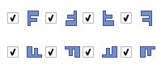 |
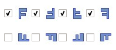 |
Example 5
This example shows how MATCH_ORIENTATIONS works for the ROTATION setting, and how it works in combination with “PATTERN_ORIENT 1”. See the previous example for an explanation of “PATTERN_ORIENT 1”. The layout has these four patterns being captured.
Using MATCH_ORIENTATIONS ROTATION, the patterns in the following table are saved to the library. Two patterns are duplicates by rotation and are saved as one pattern. The first column gives the allowed orientations for matching when only MATCH_ORIENTATIONS ROTATION is specified. The second column gives the allowed orientations to match when “PATTERN_ORIENT 1” is also specified.
Saved Pattern |
MATCH_ORIENTATIONS ROTATION |
MATCH_ORIENTATIONS ROTATION PATTERN_ORIENT 1 |
|---|---|---|
|
2 duplicates |
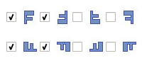 Matches in any rotated orientation. |
“PATTERN_ORIENT 1” overwrites the orientations to match. Because the captured pattern has a duplicate with a different rotation, all orientations are checked. |
|
Matches in any rotated orientation. |
“PATTERN_ORIENT 1” overwrites orientations to match. |
|
Matches in any rotated orientation. |
“PATTERN_ORIENT 1” overwrites orientations to match. |

When both MATCH_ORIENTATIONS and PATTERN_ORIENT are specified, MATCH_ORIENTATIONS controls what patterns are captured and considered duplicates, while PATTERN_ORIENT controls the orientations to match setting in the saved library.